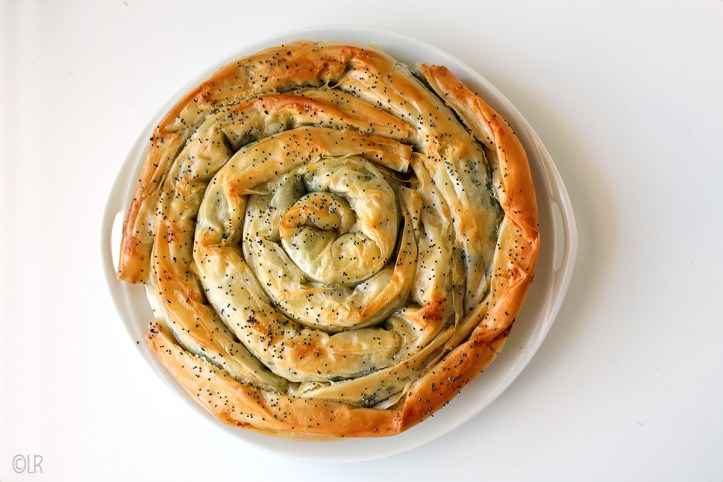

Recept Burek Of Börek Met Feta & Spinazie
Beschrijving
Börek is een deeggerecht dat gemaakt wordt in veel landen in het Midden-Oosten en de Balkan. Vaak wordt het gemaakt met blader- of filodeeg; het kan gevuld zijn met kaas, gehakt of groente (meestal spinazie). Er zijn veel variaties op dit gerecht.

Ingrediënten
- 1 pakje filodeeg (8 tot 10 vellen)
- 250 gr diepvries spinazie
- 250 gr goede feta
- 1 teentje knoflook
- 1 ei
- 100 gr boter (ongezouten)
- zout
- zwarte peper
- maanzaad of sesamzaad (optioneel)
- olie om het werkblad in te vetten
Instructies
- Circa 1 uur waarvan 30 minuten in de oven + eventueel ½ uur rusten
- Ontdooi de spinazie en druk hier het meeste vocht uit
- Breek de feta in kleine stukjes
- Pel en rasp de teen knoflook
- Scheid de dooier van het eiwit
- Klop het eiwit los
- Meng de geraspte knoflook met het eiwit
- Roer dit door de spinazie en de feta
- Smelt de boter in de magnetron of au bain-marie tot vloeibaar
- boter op de bodem van je bakvorm
- Vet je werkblad in met wat olie
- Open de verpakking filodeeg en bewaar de vellen steeds onder een vochtige theedoek tegen het uitdrogen
- Leg een vel met de lange kant naar je toe op je vette werkblad
- Penseel een dun laagje roomboter op het vel
- Leg er een tweede vel op en vet ook dit in met boter
- Verdeel wat van de vulling over de lange kant van je lap deeg (zie foto)
- Rol de lap deeg op tot een slang
- Rol de slang op tot een bolus in het midden van je vorm Herhaal deze laatste zes stappen tot alle deeg en vulling op is en er een mooie rol gevuld deeg in je vorm ligt.
- oeg nu de eidooier toe aan de overgebleven gesmolten boter;
- Penseel de bovenkant van je burek in met dit mengsel
- Strooi desgewenst wat sesam- of maanzaad op de top. Zet indien mogelijk de vorm nu, afgedekt met plastic folie, een half uurtje in de koelkast. Heb je daar geen tijd voor, ga dan direct door met afbakken.
- Zorg voor een voorverwarmde oven van 180 °C
- Bak de burek af in ongeveer 30 tot 35 minuten. De bovenzijde moet mooi goudbruin gebakken zijn. Eet de burek warm of koud.